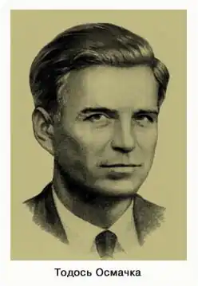
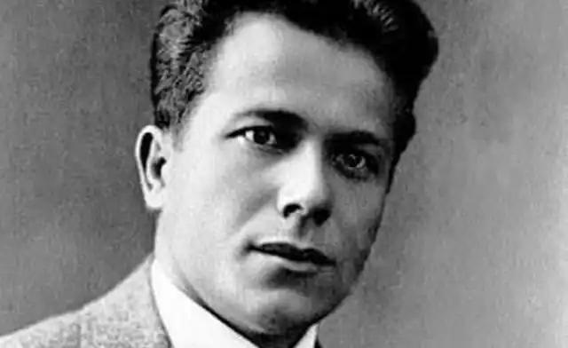

Тодось Осьмачка
(1895 — 1962)
Тодось Осьмачка свою особисту трагедію виводив із драматичної долі України й беззастережно пов'язував свої муки й страждання із фатальною залежністю митця від історичної долі його народу. У першій книжці поезій "Круча", яка з'явилася друком 1922р., молодий поет здобувається окремими віршами, хоча їх було у збірочці всього десять, на розкуте, підсилене символістською поетикою самовираження. Він — у стихії величних, планетарних зрушень, в які втягнуто сонце, моря, віки, народи... "Серед нашого поетичного молодняку Осьмачка являє, може, одну з найбільш надійних сил", — писав С. Єфремов у "Історії українського письменства". У збірці "Круча" критика привабила "нерозгадана глибінь образів і разом з тим блискуча народна мова та епічний стиль дум з чисто народними способами..." Перші вірші Осьмачки народжувалися рано — ще в дитинстві, в атмосфері сільської природи, народних повір'їв, переказів, легенд, казок — у тому світі реального й уявного, який спонукає до фантазування, до мислення, до поезії. Т. Осьмачка з цим казково-легендарним світом дитинства не розлучався все своє життя. Як поет Т. Осьмачка формувався в творчій атмосфері винятково плідного для української літератури й мистецтва п'ятиріччя — 1917—1922 pp. Хай він не бував на зборах "Музагета" на квартирі художника й мистецтвознавця Михайла Жука в Києві, хай він із запізненням гортав видрукований в 1919p. великий фоліант альманаху "Музагет", що став сенсацією в літературно-мистецьких колах, як пише Ю. Лавріненко, але його не могли не захопити поривання молодих українських митців до світових висот символістської поезії. Це була епоха "Сонячних кларнетів" (1918), "Замість сонетів і октав" (1920) Павла Тичини, художньої групи "Біла студія", головного альманаху символістів "Музагет", а також таких відомих у мистецькому розвої інших журналів та альманахів. Тодося Осьмачку символізм приваблював "як поезія відтінків, натяків, що шукає суто емоціонального впливу на читачів, що намагається стерти межі між поезією і музикою, не даючи слів-назв речам, а закорінюючи лише "ідею" про них, символізм Верленів і Маллярме, символізм Тичини доби "сонячних кларнетів". Та поетика символізму не домінує в його ранній поезії — переважає ліризм, підсилений імажиністською гіперболізацією образів. У 1925p. виходить друга книжка поезій "Скитські вогні", яку можна було б назвати гімном українському степові: Гей, степе мій, підпер ти ріками моря, щоб не схитнулися вони на ниви хлібороба… Ти запалив дзвінкі вогні великих сизих рос, що з ранків падають на обрій — на вічний твій покос… Поет прагне образно простежити історичний шлях України — пройти "по шляху віків" і таким чином усвідомити, куди ж летить новий вік і як буде стелитися доля українського народу. У вірші "На Ігоревому полі", написаному в 1923р., Осьмачка майстерно "реконструює" оповідний лад народної балади, створюючи новітню легенду-плач Ярославни: На голі майдани вийшла молодиця, поставила сина там у кривавиці, з мукою гукнула: "Ллє кров без упину!.. Не покинь закляту, розп'яту країну!.." Поета огортають тривожні передчуття нових кривавих збурень, які принишкли в ідилічних пейзажах білих, теплих травневих ранків України. Кривавий знак уявляється йому в образі велетенської борони, що висить на небі на північ зубками і чекає нових жертв. Проте тривога, сумнів, страх, передчуття біди — ці настрої не домінують повновладно в поезіях Осьмачки періоду 20-х років. Він ще зберігає віру в можливість рівноваги завдяки утвердженню нашого сильного "сьогодні". Та початок 20-х — це страшний голод в Україні, це селянські повстання й жорстокі придушення масових протестів. До студента Київського інституту народної освіти прилітають із рідного села Куцівки, що на Черкащині, де він народився 3 травня 1895р., сумні вістки. У вірші "Труни в гаях" ця трагедія українського села набуває символічного вираження в образах двох трун, оплакуваних народними сльозами, що котяться, мов ягоди-кров: Як у тій труні, що лягла під рів, битая в мороз, скупана в крові — радість молода — квіти степові! У другій труні — мати всіх людей, тих замучених, побитих дітей... Із грудей стремить кривавий багнет, а на нім горить цвіт-рожа важка. Тут, у Києві, Тодось Осьмачка поділяв біль і тривогу за долю українського села із побратимами з "Ланки", куди входили Григорій Косинка, Валер'ян Підмогильний, Євген Плужник, Борис Антоненко-Давидович. Згодом, від 1926р., Осьмачка належатиме до організації МАРС, і постійна його дружба з ланківцями-марсівцями, передусім із Григорієм Косинкою, упевнить його в правильності свого ідейно-естетичного вибору. Любив і поважав Павла Тичину, хоча й не раз дорікав йому за незрозумілі компроміси. Третьою — і останньою в радянській Україні — була збірка "Клекіт" (К., 1929). Відчуття самотності, змученості душі, розпачу посилюється ("О, будь ти прокляте, життя моє!"), водночас поет намагається взяти в підмогу молоде, щасливе безумство, безумство-хаос, що кличе в'язнів із-за грат: На барикадах радісно, відважно За подих вільності вмирають... Осьмачка у цій збірці друкує вірш "Деспотам", в якому звертається до закутого в ланці працьовитого свого народу, котрий годують у казармах на заріз і чию працю забирають "розбоєм в білий день", передрікає йому падіння "під кригу ланцюгів" і спів "присмаглими губами чужих пісень із городів". І хоча поет орієнтував ідеологічно пильних критиків на історичне "заземлення" (прихід Денікіна в Україну) ідейного пафосу вірша, справжній адресат його гнівних інвектив проглядає дуже легко. Початок тридцятих кривавих років став початком його безконечних блукань, страшних "дантових кіл": арешти, допити, переховування в родичів, спроби перейти західний кордон, вивезення до Москви й ув'язнення в Бутирці, лікування в Кирилівській психіатричній лікарні... Нарешті він, хворий, знесилений духом, опиниться в рідному селі. Наприкінці 1942р. Тодось Осьмачка приблукає до Львова*, з'явиться в літературно-мистецькому клубі в хутряній куртці та в шапці з навушниками, легендарний і відчужений навіть від знайомих йому Аркадія Любченка та Йосипа Гірняка, які незабаром також поселяться у Львові. Там Осьмачка вперше читатиме уривки з поеми "Поет". Він не раз наголошував на тому, що ця "скорботна книга" є своєрідним ключем до пізнання внутрішнього драматизму і власної долі, і долі народу, від якого поета було відірвано шаленими вирами історії. У 1947р. поема на 23 пісні вийде в світ (їх у збірці "Із-під світу", 1954, буде в поемі вже 24). Через сприйняття юним героєм Свиридом Чичкою реалій села і його проблем постає світ, конкретний, географічно чітко означений, заселений і міфологічними образами, і конкретними, не раз баченими людьми. Ця важка книга є скорботною дорогою від дитячого раювання в світі казки, розкішної природи й добрих людей до тяжкого долання "дантових кіл" тоталітарного режиму, який руйнує творчий дух, знесилює волю, перетворює людину на раба. Справді, цей складний філософський твір можна вважати вершиною творчого злету Тодося Осьмачки. Завершував він "Поета" в Німеччині, перебуваючи в таборах для переміщених осіб, активно співпрацюючи в організації письменників-емігрантів "Мистецький український рух" (МУР). До четвертої збірки поезій "Сучасникам" (1943) увійшли поезії довоєнної пори, а також досконала за мистецькою формою "Дума про Зінька Самгородського", яку український поет, літературознавець і перекладач Ігор Костецький поставив у ряд найістотніших явищ світової літератури. У 1953р. виходить п'ята збірка "Китиці часу" — вірші 1943—1948 pp., реалії емігрантської дійсності, елегійні, наявні спогляданням вимріяних ще в дитинстві Карпат, ностальгічні, звернені до України. Все частіше він звертається до прози — видає повість "Старший боярин" (1946), пише повість "План до двору" (1951), книжку "Ротонда душогубців" (1956), перекладає О. Уайлда і У. Шекспіра, виступає з есеїстичними роздумами про Шевченка й природу мистецької діяльності... Проза Тодося Осьмачки — вагома й самобутня, не схожа ні на яку іншу сторінка української епіки. Якщо повість "Старший боярин" позначена казковістю й ліричністю розкутого поетичного самовираження, то "План до двору" й "Ротонда душогубців" — літопис злочинного винищення українства в період примусової колективізації, усіх жахливих жорстокостей НКВС. Ці твори, особливо повість "Ротонда душогубців", збурили хвилю критичних обговорень. Він не зупинявся в своїх мандрах по світу, переслідуваний хворобою — страхом розправи над ним агентів КДБ. Переїхавши з Німеччини до США, Тодось Осьмачка часто виступає перед українськими громадами, багато їздить, нерідко й потрапляє у важкі психологічні "провалля", коли страх і підозри вимушують його зриватися вночі й полишати домівки друзів, де він мав теплий притулок. Багато кого незалежність мислення й гарячковість реагування Осьмачки дратували й не давали змоги зрозуміти його внутрішній стан. На вулицях Мюнхена він упав під ударом нервового паралічу 6 липня 1961р. Поета перевозять літаком до США, кладуть на лікування в психіатричну лікарню поблизу Нью-Йорка. Та вийти з госпіталю хворому поетові, який там і творив, вимріюючи збірку поезій і афоризмів "Людина між свідомістю і природою", не судилося. 7 вересня 1962р. Тодось Осьмачка помер на 67-му році життя. М. Слабошпицький Історія української літератури ХХ ст. — Кн. 2. — К.: Либідь, 1998. * — "Пригадую так, як сьогодні, квітень 1942р., коли передбачувана Осьмачкою космічна катастрофа прийшла, а по українській землі котилися німецькі танки, несучи з собою великі надії, а разом з тим ще більші руїни і розчарування. Несподівано, саме перед Великоднем, рознеслася вістка по Львову, що з України прийшов Тодось Осьмачка. До речі, ніхто не знав, яким способом добився він до Львова, а сам поет про це не хотів розказувати. Найправдоподібніше, він пішки мандрував аж із своєї Черкащини від своїх любих сестер у Куцівці, яких він згадував пізніше з таким сентиментом. Він-бо був першим з наших культурних діячів Наддніпрянщини, що появився у Львові по відступі большевиків." Юрій СТЕФАНИК Листи до приятелів. Книжка 1-2, 1963 За книгою: Українське слово. — Т.2. — К., 1994.